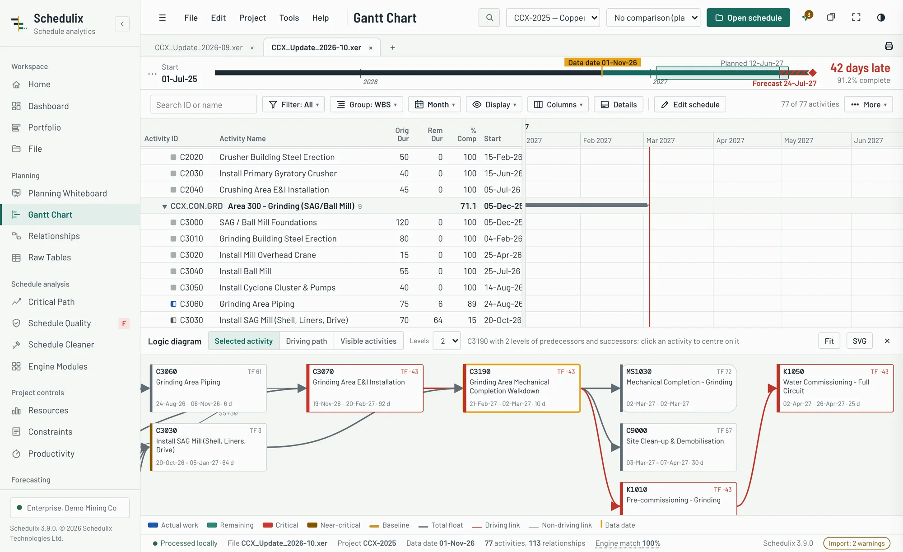
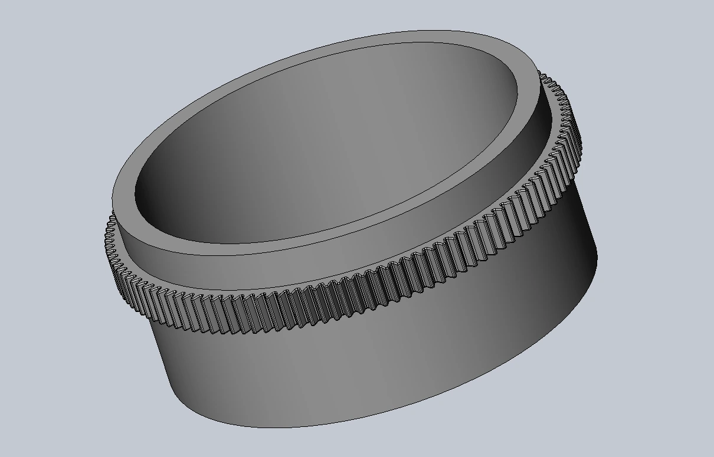

QSET · RF hardware
CubeSat S-band patch antenna
I compared satellite modulation and framing options, analyzed RF link margin, and refined a circularly polarized S-band patch in MATLAB Antenna Toolbox.
View design and simulation resultsQueen’s University · Electrical Engineering
RF, optics, and communications DSP
My work spans a CubeSat antenna with QSET, optical test engineering at Nokia, and simulation of coherent optical and digital communications.
Explore projectsQSET · RF hardware
I compared satellite modulation and framing options, analyzed RF link margin, and refined a circularly polarized S-band patch in MATLAB Antenna Toolbox.
View design and simulation resultsOptical and digital communications
A Python transceiver with Gray-coded QPSK and 16-QAM, pulse shaping, matched filtering, and bit error rate analysis.
View the signal chain and BER reference
Software · Project controls
A web application I built with one other developer to help project teams trace delays, compare schedule updates and assess milestone risk.
View product screenshots
NSERC research · Optical sensing
I designed a rotating-polarizer camera and studied how to estimate the Sun’s direction from skylight polarization patterns.
View camera design and CADBackground
Nokia
Built and calibrated wavelength-selective switch test setups, migrated MATLAB routines to Python, and worked on signal processing and test reporting.
View optical test case studyQueen’s University
Studied electrical engineering alongside CubeSat team work and research on polarization-based navigation.
RF link budgets, S-band patch antennas, MATLAB Antenna Toolbox
Optical systems testing, coherent optical communications, polarization sensing
Modulation, communication-system simulation, digital signal processing
Altium Designer, KiCad, PCB assembly, STM32, CAN, I²C
Python, C, C++, VHDL, Intel Quartus Prime
Reach me through my Queen’s email or find me on GitHub.